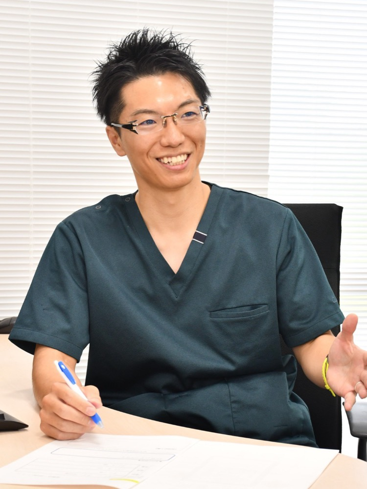

ストレスチェックは、
面接まで同じ医師に
任せられます。
医師が実施者になり、検査・結果の通知・高ストレスの社員との面接・会社への意見まで、一つの窓口でお引き受けします。社長や総務の方が、受検の管理や結果の通知で個人の結果を扱う必要はありません。
医師の実施者込み
オンライン可
面接までの目安
はじめてのストレスチェックで、
つまずきやすい3つのこと
社長が自分で実施者になれない
実施者は医師・保健師などに限られ、社員の人事に権限を持つ人はなれません。外に頼む先を探す必要があります。
個人の結果を、会社が扱えない
結果は本人に直接届け、会社が見るには、本人の同意か面接の申し出が必要です。社内の誰が何を見てよいか、ルール作りが欠かせません。
高ストレスの社員が出たあと、
面接する医師がいない
検査だけのサービスでは、医師の面接指導は別に探すことになります。日程の調整も会社の仕事になります。
検査は、始まりにすぎません。
困るのは「結果が出たあと」です。
メドナビがお引き受けすること
医師が実施者になります
産業医である代表医師が実施者になります。顧問の産業医がいる会社は、その先生に共同実施者として入っていただくこともできます。
準備の書類をひな形でお渡しします
会社の方針、社内ルール（規程）、実施計画、社員への案内文、衛生委員会などで意見を聞くための資料をそろえます。
社員はスマートフォンで回答、結果は本人へ
国が推奨する57項目（23項目の簡易版も選べます）にWebで答えてもらいます。結果は医師から本人に直接届きます。会社にお知らせするのは、原則として受検したかどうかと10人以上の集団の集計だけです（本人が同意した場合と、面接を申し出た場合を除く）。紙での実施もできます。
高ストレスの社員には、同じ医師が面接します
高ストレスと判定された方全員に、決まった文面で面接を勧めます。本人から申し出があれば会社にお知らせし、会社からご依頼をいただいてから、原則2週間以内に面接します。会社のご依頼のないまま面接したり、料金をいただいたりすることはありません。働き方の調整について、医師の意見を会社にお伝えします。休職・復職の相談が必要になっても、同じ医師が続けて対応します。
職場の集計を1枚の報告にまとめます
10人以上の集団について、職場の傾向を1枚にまとめます（個人が分からないよう、10人未満の集団の結果は原則お出ししません）。
外部に頼むときの、主な選び方
どれが合うかは会社によって違います。違いは「検査のあと」にあります。
| システムだけ | 検査の代行 | メドナビ | |
|---|---|---|---|
| 実施者（医師など） | 会社が実施者と運用体制を用意する | 含まれる／オプション | 代表医師が担当 |
| 結果の通知・保存 | 会社が用意した実施者が行う | 代行 | 医師が本人へ通知・5年保存 |
| 高ストレス者の面接指導 | 別に探す | サービスによる（含まれないことも多い） | 同じ医師が1回2万円（会社のご依頼ごと） |
| 休職・復職の相談 | サービスによる | サービスによる | 1件3万円で続けて対応 |
※ 一般的なサービスの形を分類したもので、特定の会社との比較ではありません。各サービスの内容は提供元にご確認ください。面接指導は、地域産業保健センター（無料）を利用する方法もあります。
料金（税別）
ストレスチェック 実施者込み
- 医師が実施者
- 準備書類のひな形（方針・規程・案内文など）
- Web受検（57項目／23項目）
- 高ストレス者の判定と本人への通知
- 面接の個別の勧め
- 集団分析の報告（10人以上の集団）
- 個人結果の5年保存
オプション
| 医師の面接指導（意見書込み・オンライン可） | 1回 2万円 |
| 面接指導のみ（他社で受検した会社） | 1回 2万円 |
| 休職・復職の面談 | 1件 3万円 |
| 集団分析の報告会（社長・担当者と1時間） | 1回 3万円 |
| 部署別の分析（10人以上の部署） | 1部署 5,000円 |
| 紙での実施（印刷・封入・郵送込み） | 1人 400円を加算 |
| 労基署への報告書の作成（50人以上） | 1万円 |
| 多言語対応 | 要相談 |
総額の例（Web受検・税別）
| 社員数 | 検査のみ | 面接を含む例 |
|---|---|---|
| 20人 | 2.5万円 | 4.5万円（面接1回） |
| 49人 | 2.5万円 | 6.5万円（面接2回） |
| 100人 | 5万円 | 11万円（面接3回） |
※ 面接の回数は例です。実際の回数は、面接を申し出た方のうち、会社からメドナビにご依頼いただいた件数です。高ストレスと判定されるのは一般に受検者の約1割で、面接を申し出る方はさらに少なくなります。サービス内容事前説明書は、お見積りの際にお渡しします。
ご相談から報告までの流れ
ご相談から集団分析の報告まで、約3か月が目安です（日程の詳細は、お見積りの際にサービス内容事前説明書でご説明します）。
ご相談・お見積り
社員数と実施したい時期をお知らせください。オンラインで30分ほどお話しします。
準備
ひな形をもとに、方針・社内ルール・案内文を整えます。社員の意見を聞く場の資料もお渡しします。
受検
社員がWebで回答します。会社には、受けたかどうかだけをお知らせします。
結果の通知・面接
医師が本人に結果を届け、高ストレスの方に面接を勧めます。申し出があれば会社にお知らせし、会社が頼む先を選んでご依頼ください。メドナビにご依頼いただいた場合は、面接して会社に意見を伝えます。
集団分析の報告
職場の傾向を1枚にまとめてお渡しします。ご希望があれば報告会で改善策を一緒に考えます。
実施者・面接を担当する医師

磯部 輝紀（いそべ てるき）
メドナビ株式会社（設立準備中）代表／医師（産業医・総合診療科医・泌尿器科専門医）
名古屋を拠点に、産業医として中小企業の社員と面談しています。ストレスチェックは検査で終わらせず、結果が出たあとの面接や働き方の調整まで、同じ医師が続けて受け持ちます。
よくあるご質問
社員50人未満の会社も、ストレスチェックは義務になりますか？
はい。法律の改正により、2028年4月1日から50人未満の事業場でも実施が義務になります。人数は会社全体ではなく、本社・支店・営業所などの事業場ごとに数えます。国は小規模な事業場に、社員のプライバシーを守るため外部への委託を勧めています。
会社は社員のストレスチェックの結果を見られますか？
原則として見られません。結果は医師から本人に直接届きます。会社にお渡しするのは、受検したかどうか、10人以上の集団ごとの集計、本人が同意した場合や面接指導を申し出た場合の結果と医師の意見です。
社員に受検を義務づけてもいいですか？
社員に受検の義務はありません。受けるよう勧めることはできますが、受けないこと、結果の提供に同意しないこと、面接を申し出ないことを理由に不利益な扱いをすることは禁じられています。
面接の料金が、会社の知らないうちにかかることはありませんか？
ありません。面接は、本人の申し出があり、会社からメドナビに1件ずつご依頼いただいた場合にだけ行います。申し出があれば会社にお知らせします。なお、面接指導の対象となった方（高ストレスと判定され、医師が面接を必要と認めた方）から申し出があった場合、会社は医師による面接指導を行う必要があります（労働安全衛生法第66条の10。50人未満の事業場は2028年4月から義務）。頼む先は会社が選べます（地域産業保健センターなら無料です）。
他社でストレスチェックを受けています。面接指導だけ頼めますか？
はい。1回2万円（税別・意見書込み）で、面接指導だけをお引き受けします。
ストレスチェックで、うつ病などの病気が分かりますか？
ストレスチェックは病気を診断する検査ではありません。社員が自分のストレスの状態に気づき、必要なときに医師に相談し、職場の改善につなげるための仕組みです。
名古屋・愛知以外の会社でも頼めますか？
受検と面接はオンラインで行えるため、ご相談ください。訪問が必要な場合は、愛知県内を中心にお引き受けしています。
今の産業医がいます。それでも頼めますか？
はい。今の産業医の先生に共同実施者として入っていただく形もとれます。まずはご相談ください。
まずは、30分の無料相談から。
「何から始めればいいか」だけのご相談でもかまいません。
- 社員数と、実施したい時期
- 今の産業医の有無
- ストレスチェックの実施が、はじめてかどうか
をフォームでお知らせください。担当の医師から順にご連絡します。
お問い合わせフォームGoogleフォームが別タブで開きます。社労士の先生からの資料請求も、こちらからどうぞ。